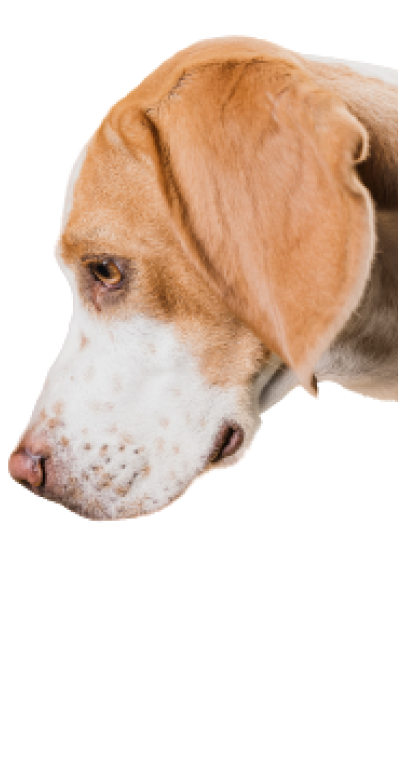
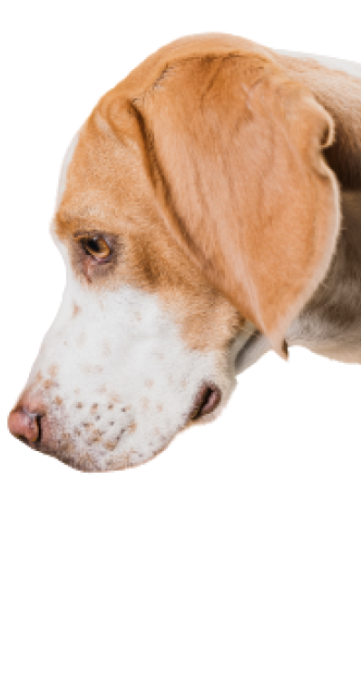
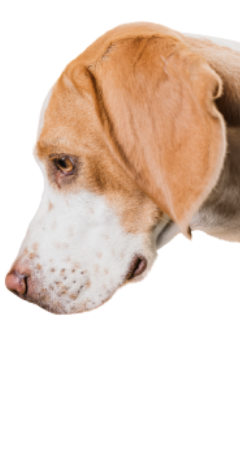

🐾 Casa do Vira Lata
Encontre seu
melhor amigo pet
Não existem animais de rua, existem animais nas ruas e eles
precisam de nós.
 

Encontre seu
melhor amigo pet
Não existem animais de rua, existem animais nas ruas e eles
precisam de nós.

Gabriel é o fundador da Casa do Vira-Lata, um abrigo que proporciona
animais de rua a oportunidade de serem adotados em lares amorosos.
Através de doações, oferecem castração, vacinação, cuidados médicos e
transporte para a casa dos adotantes.
O abrigo já realizou mais de 500 adoções desde 2019 e continua sua
missão com o apoio da comunidade.